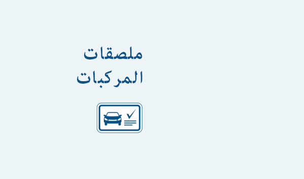

بإمكان سلطات الدولة استخدام وثائق بشكل ملصقات دالة على إجراء فحص فني للمركبات التابعة لها إثباتًا لامتثال المركبات للمتطلبات والقواعد واللوائح التشريعية في مجال المرور وحماية البيئة. اللاصق الفارغ هو عبارة عن بطاقة بلاستيكية متعددة الطبقات من حجم ID-1 مزودة بشريحة تلامسية تخزن فيها البيانات ذات الصلة. يحتوي الملصق على مميزات الطباعة المؤمنة التي تتصف بها المستندات من الفئة عينها، ومنها شبكات خلفية ملونة وعناصر ضفيرة ونصوص مايكروية وعناصر الطباعة التي تصنع باستخدام أحبار فلورية.
صورة هولوغرافية غير شفافة التي توضع على وجه المركبة تتصف بخصائص مؤمنة ولها دور في حماية الوثيقة ذاتها. فكل ملصق له رقم تصنيع منقوش بالليزر. تدون كافة المعلومات المتعلقة باجتياز مركبة لفحص فني على السطح البلاستيكي وتُسجِل على الوسيط الإلكتروني لدى الأقسام الإقليمية لسلطات الدولة المعنية بالنسبة لفحص المركبات الآلية وبمساعدة مجمع البرامج الثابتة. يعمل المجمع هذا على الإشراف على فحص المركبات تلقائيًا تسييرًا لخدمة المركبات بجودة ولزيادة من كفاءة وشفافية اجتياز فحوصات فنية للمركبات لدى دوائر شرطة المرور.
يتيح استخدام الشريحة من التحكم عن البعد بملصقات الفحوص الفنية للمركبات، والتحقق من موثوقية البيانات المسجلة عليها.
كما أنَّ المجمع يمكننا من إنشاء مستندات الدفع مقابل الخدمات المتعلقة بإجتياز الفحص الفني وذلك عن طريق نظام الدفع الآلي للخدمات.